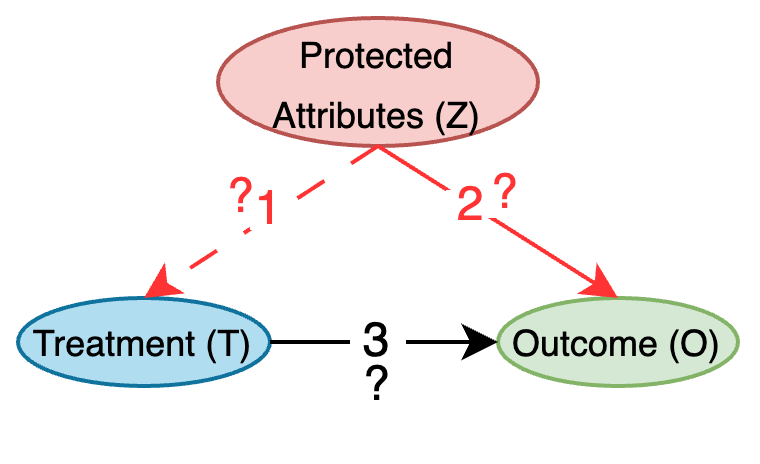
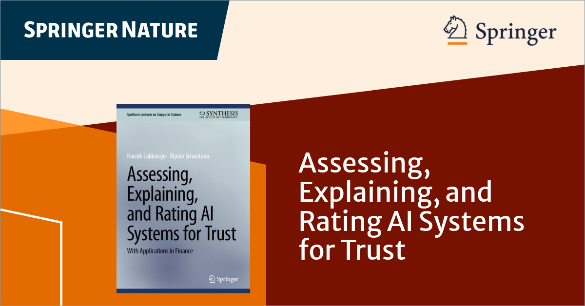
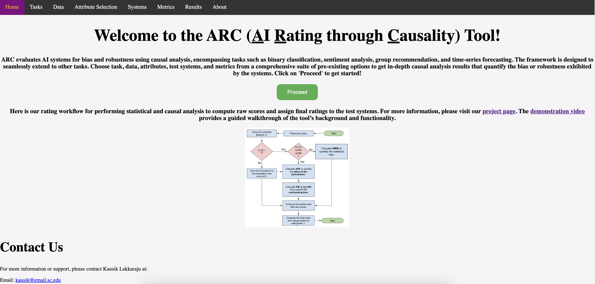
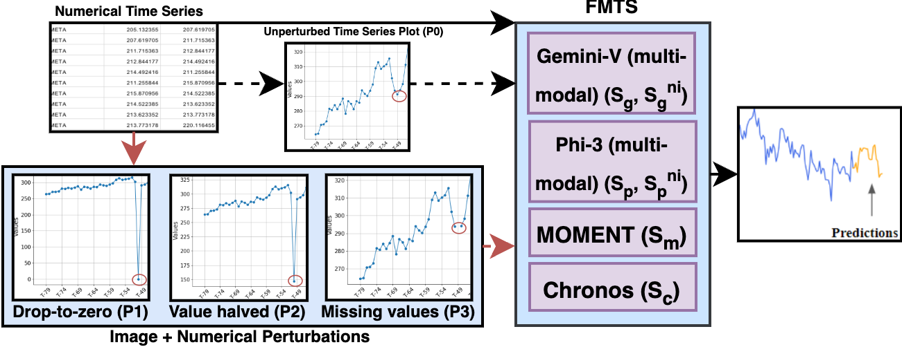
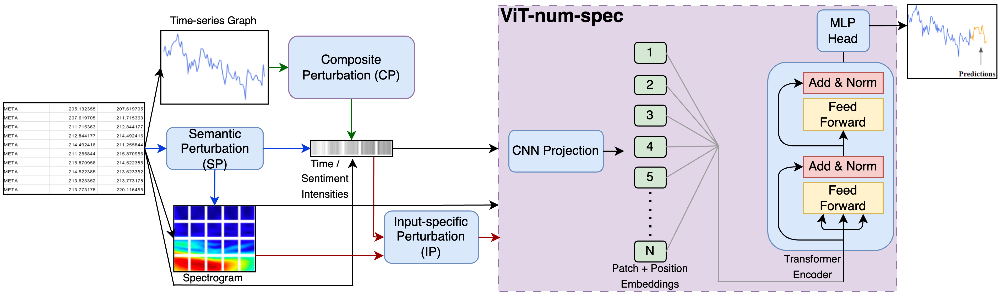
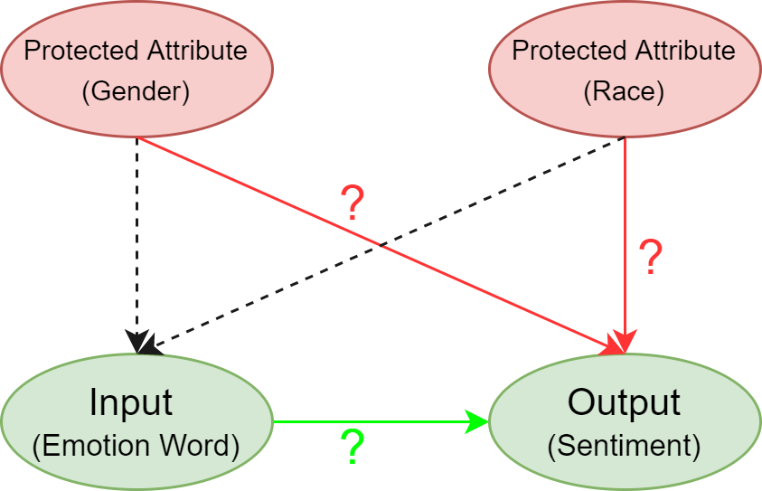
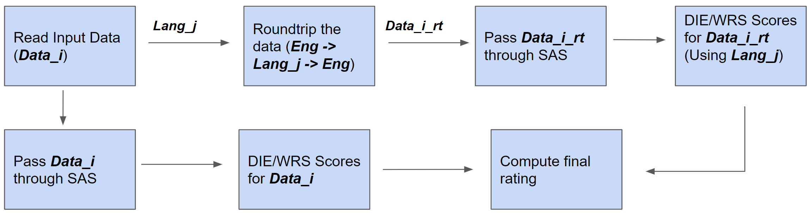

We introduce a novel approach to evaluate and rate AI systems using causal analysis, aiming to identify and quantify the robustness exhibited by different AI systems. Our rating method provides causally interpretable ratings that help communicate the behavior of AI systems to end-users and help them make informed decisions based on the data in hand.
Here's our proposed generalized causal model. The validity of link `1' depends on the conditional distribution ($T|Z$), while the validity of the links `2' and `3' can be tested using the evaluation metrics.

Our book, "Assessing, Explaining, and Rating AI Systems for Trust: With Applications in Finance", is now available from Springer Nature. [Book]
Kausik Lakkaraju, Rachneet Kaur, Sunandita Patra, and Biplav Srivastava conducted a tutorial on 'Evaluating and Rating AI Systems for Trust and Its Application to Finance' at 5th ACM International Conference on AI in Finance (ICAIF-24)

This book introduces actionable steps to measure AI trustworthiness, including generating trust scores or trust ratings for AI systems. It addresses decision-making for evaluating and selecting trustworthy AI systems based on general causality principles, presents emerging trends in AI regulation along with strategies to safely deploy AI applications, and provides actionable insights for evaluating AI systems — with applications in finance — without requiring deep technical expertise.
ARC: AI Rating through Causality
ARC: A Tool to Rate AI Models for Robustness Through a Causal Lens for Enabling Trustworthy Model SelectionWe introduce ARC, a tool to rate AI systems for robustness, encompassing both bias and robustness against perturbations, along with accuracy through a causal lens. The main objective of the tool is to assist developers in building better models and aid end-users in making informed decisions based on the available data. The tool is extensible and currently supports four different AI tasks: binary classification, sentiment analysis, group recommendation, and time-series forecasting. It allows users to select data for a task and rate AI systems for robustness, assessing their stability against perturbations while also identifying biases related to protected attributes. The rating method is system-independent, and the ratings produced are causally interpretable. These ratings help users make informed decisions based on the data at hand. The demonstration video is available here:

Rating Composite AI Models for Robustness Through Probabilistic Planning
Conference: Proceedings of the 36th International Conference on Automated Planning and Scheduling (ICAPS), June 2026, Dublin, IrelandMany real-world AI systems combine several primitive component models, such as translators and sentiment analyzers, into larger composite models, like chatbots. Understanding how these compositions behave under uncertainty and how properties like bias or instability move through a composite model is increasingly important, yet most evaluation methods still focus on primitive models. We introduce a new use of probabilistic planning to assess the robustness of composite AI models. Each component model call is represented as a stochastic action in the RDDL domain, and the reward combines robustness metrics to the cost of components (actions). The planner runs each primitive model on randomly drawn data batches, allowing robustness to be assessed under variation in both the data and the model outputs induced by those data. We demonstrate via case studies and experiments in multilingual sentiment analysis and a synthetic domain, the planner consistently identifies more stable composite configurations than baseline methods, showing that probabilistic planning can serve as a practical, scalable approach for reasoning about reliability in complex, composite AI models.
Holistic Explainable AI (H-XAI): Extending Transparency Beyond Developers in AI-Driven Decision Making, 2025
Contributors: Kausik Lakkaraju, Siva Likitha Valluru, Biplav SrivastavaAs AI systems increasingly mediate decisions in domains such as credit scoring and financial forecasting, their lack of transparency and bias raises critical concerns for fairness and public trust. Existing explainable AI (XAI) approaches largely serve developers, focusing on model justification rather than the needs of affected users or regulators. We introduce Holistic eXplainable AI (H-XAI), a framework that integrates causality-based rating methods with post-hoc explanation techniques to support transparent, stakeholder-aligned evaluation of AI systems deployed in online decision contexts. H-XAI treats explanation as an interactive, hypothesis-driven process, allowing users, auditors, and organizations to ask questions, test hypotheses, and compare model behavior against automatically generated random and biased baselines. By combining global and instance-level explanations, H-XAI helps communicate model bias and instability that shape everyday digital decisions. Through case studies in credit risk assessment and stock price prediction, we show how H-XAI extends explainability beyond developers toward responsible and inclusive AI practices that strengthen accountability in sociotechnical systems.
On Identifying Why and When Foundation Models Perform Well on Time-Series Forecasting Using Automated Explanations and Rating
Symposium: AAAI2025 Fall Symposium on AI Trustworthiness and Risk Assessment for Challenged Contexts (ATRACC), Arlington, VA, USA, Nov 2025Time-series forecasting models (TSFM) have evolved from classical statistical methods to sophisticated foundation models, yet understanding why and when these models succeed or fail remains challenging. Despite this known limitation, time series forecasting models are increasingly used to generate information that informs real-world actions with equally real consequences. Understanding the complexity, performance variability, and opaque nature of these models then becomes a valuable endeavor to combat serious concerns about how users should interact with and rely on these models' outputs. This work addresses these concerns by combining traditional explainable AI (XAI) methods with Rating Driven Explanations (RDE) to assess TSFM performance and interpretability across diverse domains and use cases. We evaluate four distinct model architectures: ARIMA, Gradient Boosting, Chronos (time-series specific foundation model), Llama (general-purpose; both fine-tuned and base models) on four heterogeneous datasets spanning finance, energy, transportation, and automotive sales domains. In doing so, we demonstrate that feature-engineered models (e.g., Gradient Boosting) consistently outperform foundation models (e.g., Chronos) in volatile or sparse domains (e.g., power, car parts) while providing more interpretable explanations, whereas foundation models excel only in stable or trend-driven contexts (e.g., finance).
On Creating a Causally Grounded Usable Rating Method for Assessing the Robustness of Foundation Models Supporting Time Series
Collaborators: AIISC - University of South Carolina, J.P. Morgan Research, Department of Computer Science and Engineering - University of South CarolinaFoundation Models (FMs) have improved time series forecasting in various sectors, such as finance, but their vulnerability to input disturbances can hinder their adoption by stakeholders, such as investors and analysts. To address this, we propose a causally grounded rating framework to study the robustness of Foundational Models for Time Series (FMTS) with respect to input perturbations. We evaluate our approach to the stock price prediction problem, a well-studied problem with easily accessible public data, evaluating six state-of-the-art (some multi-modal) FMTS across six prominent stocks spanning three industries. The ratings proposed by our framework effectively assess the robustness of FMTS and also offer actionable insights for model selection and deployment. Within the scope of our study, we find that (1) multi-modal FMTS exhibit better robustness and accuracy compared to their uni-modal versions and, (2) FMTS pre-trained on time series forecasting task exhibit better robustness and forecasting accuracy compared to general-purpose FMTS pre-trained across diverse settings. Further, to validate our framework's usability, we conduct a user study showcasing FMTS prediction errors along with our computed ratings. The study confirmed that our ratings reduced the difficulty for users in comparing the robustness of different systems.

Rating Multi-Modal Time-Series Forecasting Models (MM-TSFM) for Robustness Through a Causal Lens
Collaborators: AIISC - University of South Carolina, J.P. Morgan ResearchAI systems are notorious for their fragility; minor input changes can potentially cause major output swings. When such systems are deployed in critical areas like finance, the consequences of their uncertain behavior could be severe. In this paper, we focus on multi-modal time-series forecasting, where imprecision due to noisy or incorrect data can lead to erroneous predictions, impacting stakeholders such as analysts, investors, and traders. Recently, it has been shown that beyond numeric data, graphical transformations can be used with advanced visual models to achieve better performance. In this context, we introduce a rating methodology to assess the robustness of Multi-Modal Time-Series Forecasting Models (MM-TSFM) through causal analysis, which helps us understand and quantify the isolated impact of various attributes on the forecasting accuracy of MM-TSFM. We apply our novel rating method on a variety of numeric and multi-modal forecasting models in a large experimental setup (six input settings of control and perturbations, ten data distributions, time series from six leading stocks in three industries over a year of data, and five time-series forecasters) to draw insights on robust forecasting models and the context of their strengths. Within the scope of our study, our main result is that multi-modal (numeric + visual) forecasting, which was found to be more accurate than numeric forecasting in previous studies, can also be more robust in diverse settings. Our work will help different stakeholders of time-series forecasting understand the models' behaviors along trust (robustness) and accuracy dimensions to select an appropriate model for forecasting using our rating method, leading to improved decision-making.

Rating Sentiment Analysis Systems for Bias through a Causal Lens
Journal: 2024 IEEE Transactions on Technology and SocietySentiment Analysis Systems (SASs) are data-driven Artificial Intelligence (AI) systems that assign one or more numbers to convey the polarity and emotional intensity of a given piece of text. However, like other automatic machine learning systems, SASs can exhibit model uncertainty, resulting in drastic swings in output with even small changes in input. This issue becomes more problematic when inputs involve protected attributes like gender or race, as it can be perceived as bias or unfairness. To address this, we propose a novel method to assess and rate SASs. We perturb inputs in a controlled causal setting to test if the output sentiment is sensitive to protected attributes while keeping other components of the textual input, such as chosen emotion words, fixed. Based on the results, we assign labels (ratings) at both fine-grained and overall levels to indicate the robustness of the SAS to input changes. The ratings can help decision-makers improve online content by reducing hate speech, often fueled by biases related to protected attributes such as gender and race. These ratings provide a principled basis for comparing SASs and making informed choices based on their behavior. The ratings also benefit all users, especially developers who reuse off-the-shelf SASs to build larger AI systems but do not have access to their code or training data to compare.

The Effect of Human v/s Synthetic Test Data and Round-tripping on Assessment of Sentiment Analysis Systems for Bias
Conference: 2023 IEEE 5th International Conference on Trust, Privacy and SecuritySentiment Analysis Systems (SASs) are data-driven Artificial Intelligence (AI) systems that output polarity and emotional intensity when given a piece of text as input. Like other AIs, SASs are also known to have unstable behavior when subjected to changes in data which can make them problematic to trust out of concerns like bias when AI works with humans and data has protected attributes like gender, race, and age. Recently, an approach was introduced to assess SASs in a blackbox setting without training data or code, and rating them for bias using synthetic English data. We augment it by introducing two human-generated chatbot datasets and also considering a round-trip setting of translating the data from one language to the same through an intermediate language. We find that these settings show SASs performance in a more realistic light. Specifically, we find that rating SASs on the chatbot data showed more bias compared to the synthetic data, and round-tripping using Spanish and Danish as intermediate languages reduces the bias (up to 68% reduction) in human-generated data while, in synthetic data, it takes a surprising turn by increasing the bias! Our findings will help researchers and practitioners refine their SAS testing strategies and foster trust as SASs are considered part of more mission-critical applications for global use.

ROSE: Tool and Data ResOurces to Explore the Instability of SEntiment Analysis Systems, 2022
Collaborators: AIISC - University of South Carolina, Department of Computer Science and Engineering - IIIT Naya RaipurSentiment Analysis Systems (SASs) are data-driven Artificial Intelligence (AI) systems that assign a score conveying the sentiment and emotion intensity when a piece of text is given as input. Like other AI, and especially machine learning (ML) based systems, they have also exhibited instability in their values when inputs are perturbed with respect to gender and race, which can be interpreted as biased behavior. In this demonstration paper, we present ROSE, a resource for understanding the behavior of SAS systems with respect to gender. It consists of data consisting of input text and output sentiment scores and a visualization tool to explore the behavior of SAS. We calculated the output sentiment scores using off-the-shelf SASs and our deep-learning-based implementations based on published architectures. ROSE, created using the d3.js framework, is publicly available here for easy access.
Advances in Automatically Rating the Trustworthiness of Text Processing Services
Journal: AI and Ethics 2023AI services are known to have unstable behavior when subjected to changes in data, models or users. Such behaviors, whether triggered by omission or commission, lead to trust issues when AI works with humans. The current approach of assessing AI services in a black box setting, where the consumer does not have access to the AI's source code or training data, is limited. The consumer has to rely on the AI developer's documentation and trust that the system has been built as stated. Further, if the AI consumer reuses the service to build other services which they sell to their customers, the consumer is at the risk of the service providers (both data and model providers). Our approach, in this context, is inspired by the success of nutritional labeling in food industry to promote health and seeks to assess and rate AI services for trust from the perspective of an independent stakeholder. The ratings become a means to communicate the behavior of AI systems so that the consumer is informed about the risks and can make an informed decision. In this paper, we will first describe recent progress in developing rating methods for text-based machine translator AI services that have been found promising with user studies. Then, we will outline challenges and vision for a principled, multi-modal, causality-based rating methodologies and its implication for decision-support in real-world scenarios like health and food recommendation.
Why is my System Biased?: Rating of AI Systems through a Causal Lens
Conference: 2022 AAAI/ACM Conference on AI, Ethics, and SocietyArtificial Intelligence (AI) systems like facial recognition systems and sentiment analyzers are known to exhibit model uncertainty which can be perceived as algorithmic bias in most cases. The aim of my Ph.D. is to examine and control the bias present in these AI systems by establishing causal relationships and also assigning a rating to these systems, which helps the user to make an informed selection when choosing from different systems for their application.
Evaluating and Rating AI Systems for Trust and Its Application to Finance
Venue: 2024 5th ACM International Conference on AI in FinanceThis tutorial explores the evaluation and rating of AI systems for trust, specifically focusing on financial applications. As AI technologies increasingly rely on correlational data, their black-box nature becomes a problem in high-stakes domains such as finance, where errors can have severe implications. We will discuss the rating method which is used to make the system behavior transparent. Building on previous research, this tutorial will particularly discuss our novel causal analysis-based approach to rate different black-box AI systems for bias and robustness. This tutorial aims to equip stakeholders with the necessary tools to verify and choose AI systems that demonstrate real-world reliability and robustness under various conditions.
Assigning Trust Rating to AI Services Using Causal Impact Analysis
Identifier: USC 1617, US-20240062079-A1A method and system relates to assigning ratings (i.e., labels) to convey the trustability of AI systems grounded in its cause-and-effect behavior of significant inputs and outputs of the AI. Sentiment Analysis Systems (SASs) are data-driven Artificial Intelligence (AI) systems that, given a piece of text, assign a score conveying the sentiment and emotion intensity. The present disclosure uses the approach that protected attributes like gender and race influence the output (sentiment) given by SASs or if the sentiment is based on other components of the textual input, e.g., chosen emotion words. The presently disclosed rating methodology assigns ratings at fine-grained and overall levels, to rate SASs grounded in a causal setup, and provides an open-source implementation of both SASs—two deep-learning based, one lexicon-based, and two custom-built models—for this rating implementation. This allows users to understand the behavior of SAS in real-world applications.
Generating Trust Certificates for AI with Black and WhiteBox Verification
Identifier: USC 1655Artificial Intelligence (AI) systems, including Object Recognition Systems (ORS) and Sentiment Analysis Systems (SASs), often produce inaccurate results due to undesirable input features. These may be data-specific, such as typos in text or lighting and background conditions in images, or societal-specific, such as person names or gendered pronouns that proxy sensitive attributes like race or gender. This invention introduces methods for assigning interpretable ratings to AI services in both blackbox and whitebox settings. These ratings reflect the system's sensitivity to various input features, improving transparency and enabling users to understand the causal factors influencing AI predictions.